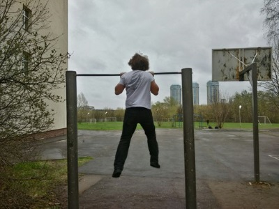
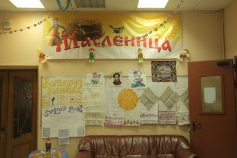

Спорт в СУНЦе
Турник, поле, беговая дорожка. Именно эти места являются излюбленными для занятий спортом среди учащихся, но существуют ли ещё возможности для физических упражнений в СУНЦе?
Аргументом в пользу того, что администрация пытается привить любовь к спорту в СУНЦе, является зарядка. Люди, избегающие её или же просто не отмечающиеся, получают выговор в конце каждого месяца.
Ученики, серьезно занимающиеся тем или иным видом спорта, могут пойти к сильному тренеру из МГУ, который будет натаскивать вас, и при должном усилии вы сможете даже не будучи студентом Университета играть за его молодежную сборную, а за определенные успехи вы получите некие "плюшки" при поступлении. Ну что сказать, спорт здесь поддерживается.
При всех попытках администрации улучшить ситуацию со спортом, спортзал в СУНЦе оставляет желать лучшего. Низкие потолки, нестандартный размер, ключ от него трудно достать, но даже если вы смогли получить его, то можете попросту не найти нужного инвентаря, а впускать вас в тренерскую никто не собирается, так что лучше поддерживать контакт с физруками и брать у них спортивную экипировку на хранение.
Спорт - это жизнь, но как прожить её выбираем только мы, так что если вы готовы мириться с некоторыми трудностями в плане занятий спортом, то для вас все будет доступно, ведь, как известно, кто ищет, тот всегда найдет.
Соревнования
Каждый хочет побеждать - в СУНЦе это правило действует абсолютно так же, как и везде, и сегодня мы рассматриваем соревнования, проходившие в интернате.
Это были официальные соревнования, приуроченные ко всеми любимому празднику начала весны - Масленице. Сама по себе масленица отмечается в СУНЦе знатно: множество выпечки и огромный торт на ужин, в этот день повара отрабатывают почти за весь год, но сейчас не об этом. По случаю наступления праздника было решено провести соревнования по волейболу и баскетболу, к самим играм вопросов нет, но матчи сильно затянулись. На волейболе можно было увидеть достаточно сильную игру, ведь именно по этому поводу были приглашены игроки из МГУ, впрочем, баскетболу был не хуже, но из-за нехватки времени финальные игры баскетболистов не были сыграны. На мой взгляд, соревнования прошли отлично, как и всегда, поэтому если вы их посетите, то времени точно не потеряете зря.
Несомненно, после таких впечатляющих игр, как на "Масленица", сунцы ожидали продолжения, но пока что мы видим только жалкие попытки устроить что-то хорошее, которые обречены на провал. К примеру, соревнования по футболу, на которые не пришел организатор, являющийся судьей, или же баскетбольные матчи, на которых вы не могли даже выбрать команду, в которой будете играть. Так что, на самом-то деле не все так радужно со спортом, хотя можно абсолютно точно сказать, что вероятность соревнованию стать хорошим примерно равна пятидесяти процентам. На мой взгляд не плохо, но можно и лучше.